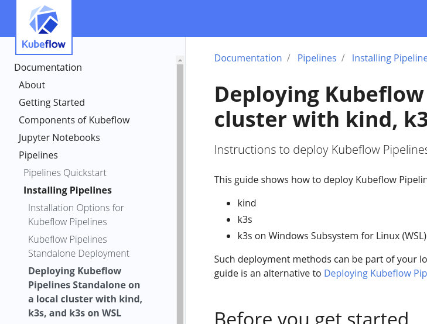

Quick deploy¶
Kubernetes is a complex environment and from my experience, it usually doesn’t go smooth. The easiest deployment I have worked with so far is with “kind”, which gives you a single command to run to have an operational kubernetes cluster. It is still possible that the version of kubeflow you deploy on that fails for some magical reason, but I’ll add some commands to help you diagnose if things are ok or not.
Also for a cloud deploy, a basic deployment is very easy, but if you care about security things quickly get a bit more complex.
Local deploy¶
When you look on the Kubeflow site and the install section, it is discussing a full deployment of Kubeflow. For the next couple of segments, we don’t need to worry about that yet, so we’ll deploying only the “Kubeflow Pipelines” part. In there you’ll find some alternative installation methods, one of which is the one we’re going for.
I’ve had the best results with kind, so I suggest we follow that tutorial:
Deploying Kubeflow Pipelines standalone on local cluster
You should also install “kubectl”, because that utility is used to deploy kubeflow and it’s also what you would use for diagnostics to make sure everything is up and running.
So when you you have kind installed on your computer, it should now be as simple as:
kind create cluster
export PIPELINE_VERSION=1.0.1
kubectl apply -k "github.com/kubeflow/pipelines/manifests/kustomize/cluster-scoped-resources?ref=$PIPELINE_VERSION"
kubectl wait --for condition=established --timeout=60s crd/applications.app.k8s.io
kubectl apply -k "github.com/kubeflow/pipelines/manifests/kustomize/env/platform-agnostic-pns?ref=$PIPELINE_VERSION"
This will take a little while to deploy. You can verify progress by looking at the status of the pods. In the end, all of them have to be deployed successfully.
kubectl -n kubeflow get pods
In my case, I had an issue with the mysql pod not being able to create a database. Which was solved by turning off app armor as described here:
mysql example failed on minikube
Your case may differ. Please don’t ask me why it fails on your machine if it does, that’s out of scope for this tutorial
For debugging, here’s how to get the logs for your pod:
kubectl -n kubeflow logs <pod-id>
When all pods are running, you’re ready to set up a proxy to be able to access the Pipelines UI. The first step is confirming they are up and running:
kubectl -n kubeflow kubectl -n kubeflow get services
...
ml-pipeline-ui ClusterIP 10.102.207.204 <none> 80/TCP 22h
...
Then do a port-forward command to be able to access the service:
kubectl port-forward -n kubeflow svc/ml-pipeline-ui 8080:80
Now you can access the Pipelines UI at http://localhost:8080
This completes the quick deployment of kubeflow locally.